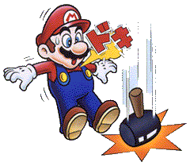
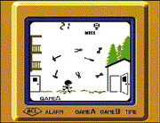

●むかしモード 空から次々に落下してくるトンカチ、スパナ、ドライバー。何故空からこんな危ない物が？それはゲームなのであまり深く考えずにあそびましょう。 ★上達へのコツ 物が落ちるタイミングをしっかり見極めて進みましょう。あまり焦らずに、時には戻ったりしながら慎重にプレイする事が上達への近道です。  ●いまモード 空にいる敵からトンカチ、鉄球、炎など危険きわまりない物が次々と落ちてくる。その中をかいくぐり、金貨を集めていざキノコハウスへというとてもあわただしいゲームです。 ★上達へのコツ 高得点を狙うひけつはコインにあります。コインはたくさん取れば取るほど、キノコハウスに入った時のボーナス点が多くなり、最高で3倍の得点がもらえます。落下物が少ない時は積極的にコインを集めましょう！ |
  
|